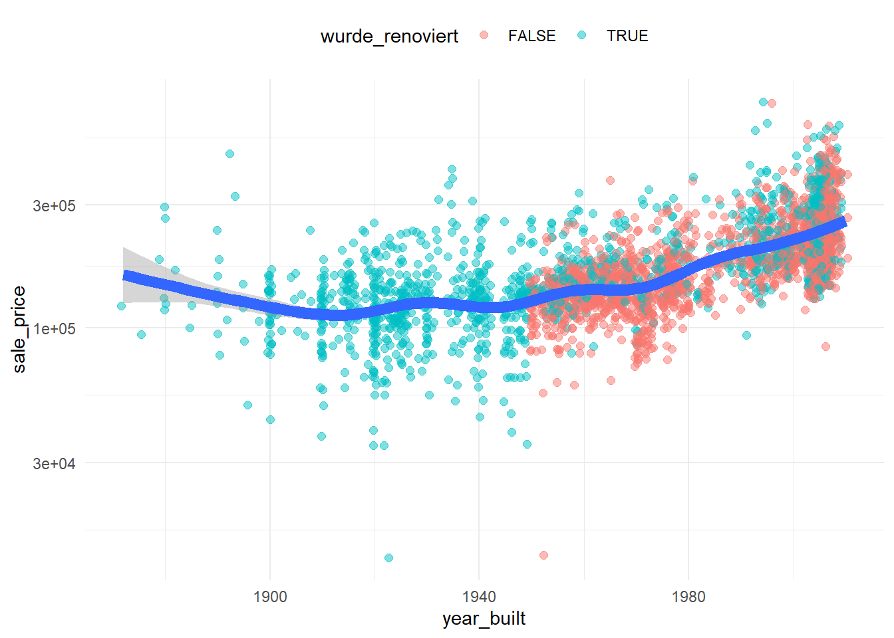

library(tidyverse)
library(janitor)
data(ames, package = 'modeldata')
ames_teil <- ames %>%
clean_names() %>%
select(sale_price, lot_area, ms_zoning, neighborhood)WiWi BrushUp Kurs 2022
Ames Housing - Neue Variablen
Zielsetzung
Unser Ziel ist einfach.
Schritt 1: Daten “mutieren”
Schritt 2: Zum krassen Hackerman mutieren.
Aufgaben
Wir starten wieder mit unserem Datensatz ames_teil.
Per $ zu neuen Variablen
In dem letzten Tutorial haben wir Vektoren berechnet, um damit ggplot() zu füttern und die folgende Grafik zu erzeugen.
preise <- ames_teil$sale_price
sqft <- ames_teil$lot_area
preis_pro_sqft <- preise / sqft
hoher_preis_pro_sqft <- preis_pro_sqft > 80
ggplot() +
geom_point(
aes(x = sqft, y = preise, col = hoher_preis_pro_sqft),
size = 3,
alpha = 0.5
) +
scale_x_log10() +
scale_y_log10()Häufig ist es sinnvoll, neue berechnete Größen direkt dort zu speichern, wo deren Ursprung ist. Dementsprechend könnten wir statt eigenen Vektoren preis_pro_sqft und hoher_preis_pro_sqft direkt mit die entsprechenden Spalten in dem tibble ames_teil erzeugen. Probiere das zunächst mit dem $ Operator, um die folgende Tabelle zu berechnen. Erzeuge, dabei zusätzlich die Spalten preis_pro_qm und hoher_preis_pro_qm. Dabei wollen wir $800 pro qm als hoch bezeichnen. Außerdem darfst du den folgenden Umrechnungsfaktor nutzen.
\[ 1 \text{ ft}^2 = 0.09290304 \text{ m}^2 \]
ames_teil# A tibble: 2,930 x 8
sale_price lot_area ms_zoning neighborhood preis_pro_sqft hoher_preis_pro~
<int> <int> <fct> <fct> <dbl> <lgl>
1 215000 31770 Residential~ North_Ames 6.77 FALSE
2 105000 11622 Residential~ North_Ames 9.03 FALSE
3 172000 14267 Residential~ North_Ames 12.1 FALSE
4 244000 11160 Residential~ North_Ames 21.9 FALSE
5 189900 13830 Residential~ Gilbert 13.7 FALSE
6 195500 9978 Residential~ Gilbert 19.6 FALSE
7 213500 4920 Residential~ Stone_Brook 43.4 FALSE
8 191500 5005 Residential~ Stone_Brook 38.3 FALSE
9 236500 5389 Residential~ Stone_Brook 43.9 FALSE
10 189000 7500 Residential~ Gilbert 25.2 FALSE
# ... with 2,920 more rows, and 2 more variables: preis_pro_qm <dbl>,
# hoher_preis_pro_qm <lgl>Damit können wir nun die obige Grafik reproduzieren und wie gewohnt ein data Argument verwenden.
ggplot(ames_teil, aes(lot_area, sale_price, col = hoher_preis_pro_sqft)) +
geom_point(size = 3, alpha = 0.5) +
scale_x_log10() +
scale_y_log10()Per mutate() zum Ziel
Betrachten wir nun wieder den vollständigen Datensatz, um mal ein paar andere Variablen untersuchen zu können.
dat <- clean_names(ames)
dat# A tibble: 2,930 x 74
ms_sub_class ms_zoning lot_frontage lot_area street alley lot_shape
* <fct> <fct> <dbl> <int> <fct> <fct> <fct>
1 One_Story_1946_and_Ne~ Resident~ 141 31770 Pave No_A~ Slightly~
2 One_Story_1946_and_Ne~ Resident~ 80 11622 Pave No_A~ Regular
3 One_Story_1946_and_Ne~ Resident~ 81 14267 Pave No_A~ Slightly~
4 One_Story_1946_and_Ne~ Resident~ 93 11160 Pave No_A~ Regular
5 Two_Story_1946_and_Ne~ Resident~ 74 13830 Pave No_A~ Slightly~
6 Two_Story_1946_and_Ne~ Resident~ 78 9978 Pave No_A~ Slightly~
7 One_Story_PUD_1946_an~ Resident~ 41 4920 Pave No_A~ Regular
8 One_Story_PUD_1946_an~ Resident~ 43 5005 Pave No_A~ Slightly~
9 One_Story_PUD_1946_an~ Resident~ 39 5389 Pave No_A~ Slightly~
10 Two_Story_1946_and_Ne~ Resident~ 60 7500 Pave No_A~ Regular
# ... with 2,920 more rows, and 67 more variables: land_contour <fct>,
# utilities <fct>, lot_config <fct>, land_slope <fct>, neighborhood <fct>,
# condition_1 <fct>, condition_2 <fct>, bldg_type <fct>, house_style <fct>,
# overall_cond <fct>, year_built <int>, year_remod_add <int>,
# roof_style <fct>, roof_matl <fct>, exterior_1st <fct>, exterior_2nd <fct>,
# mas_vnr_type <fct>, mas_vnr_area <dbl>, exter_cond <fct>, foundation <fct>,
# bsmt_cond <fct>, bsmt_exposure <fct>, bsmt_fin_type_1 <fct>, ...Scheinbar gibt es eine Variable year_built, die dem Baujahr des Hauses entspricht. Dies könnten wir doch mal zusammen mit dem Verkaufspreis betrachten. Wir könnten hier einen klaren Trend erwarten: Je älter das Haus ist, desto günstiger der Preis. Schauen wir mal nach. Da wir ziemlich viele Beobachtungen haben, legen wir doch am besten eine Ausgleichskurve über die Datenpunkte.
dat %>%
ggplot(aes(year_built, sale_price)) +
geom_jitter(alpha = 0.5, size = 2) +
geom_smooth(size = 3) +
scale_y_log10() +
theme_minimal()`geom_smooth()` using method = 'gam' and formula 'y ~ s(x, bs = "cs")'Interessant. Es wirkt so als wären die besonders alten Häuser teurer als wir vermutet hätten. Woran kann das liegen? Das wollen wir untersuchen, indem wir mit mutate() neue Variablen berechnen und diese in unsere Analyse einfließen lassen.
Aus der Dokumentation des Datensatzes wissen wir, dass die Variable year_remod_add entweder das Baujahr year_built oder ein Renovierungsjahr enthält. Somit können wir eine neue Variable wurde_renoviert erzeugen. Nutze nun die Variable dat und die Funktionen select() bzw. mutate(), um den folgenden Datensatz in eine Variable dat_renovated zu speichern.
# A tibble: 2,930 x 4
sale_price year_built year_remod_add wurde_renoviert
<int> <int> <int> <lgl>
1 215000 1960 1960 FALSE
2 105000 1961 1961 FALSE
3 172000 1958 1958 FALSE
4 244000 1968 1968 FALSE
5 189900 1997 1998 TRUE
6 195500 1998 1998 FALSE
7 213500 2001 2001 FALSE
8 191500 1992 1992 FALSE
9 236500 1995 1996 TRUE
10 189000 1999 1999 FALSE
# ... with 2,920 more rowsBeachte, dass die Variable dat durch mutate() unverändert bleibt, wenn wir dat nicht durch den berechneten tibble überschreiben. Das ist ein bisschen anders als mit dem $ Operator. Wenn man den benutzt, dann wird der Datensatz direkt an Ort und Stelle verändert. Das ist etwas was man im Kopf behalten darf. Wie dem auch sei. Nutzen wir nun unsere neuen Variablen, um eine neue Grafik zu erzeugen.

Hier lässt sich erkennen, dass alle alten Häuser renoviert sind. Dementsprechend werden die wahrscheinlich teurer sein. Hinzu kommen sicherlich noch andere Effekte. Die sehr alten Häuser, die jetzt noch verkauft werden, sind bestimmt ziemlich gut erhalten. Wenn nicht, dann wären sie wie (vermutlich viele andere alte Häuser auch) abgerissen worden. Dies ist eine Art survivorship bias. Mit weiteren Untersuchungen der Daten könnte man evtl. weitere Anhaltspunkte zu dieser Theorie finden.